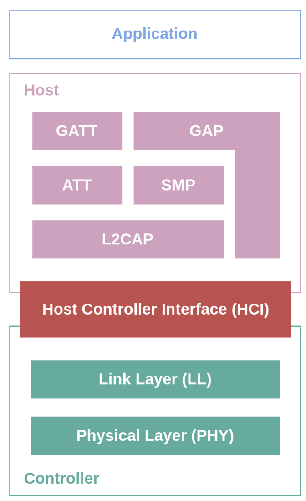
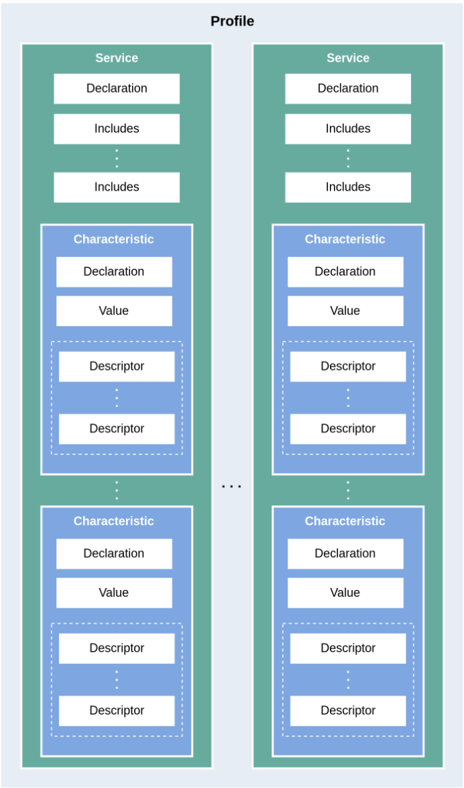
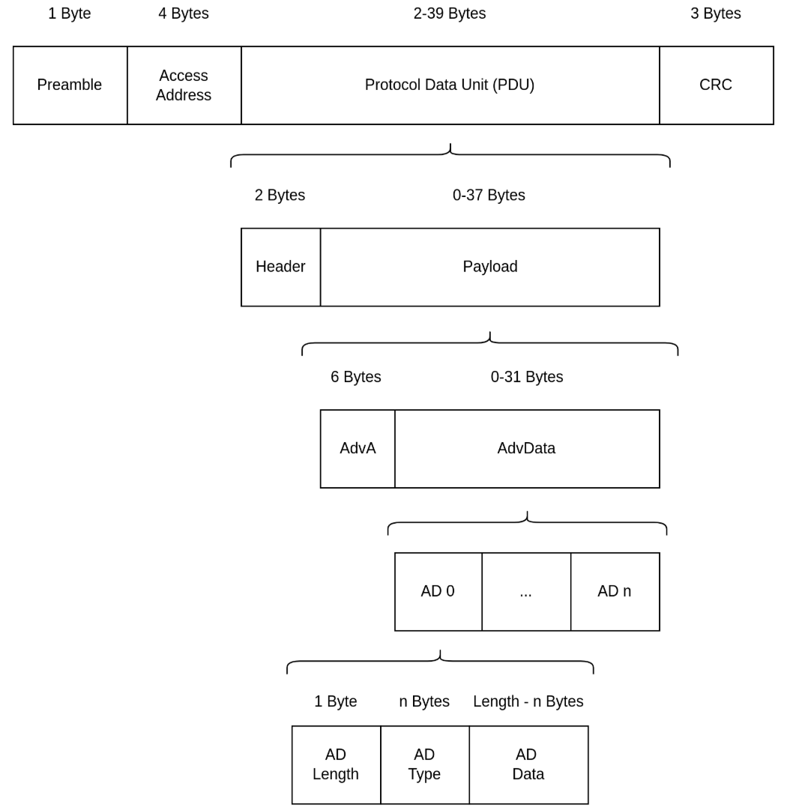
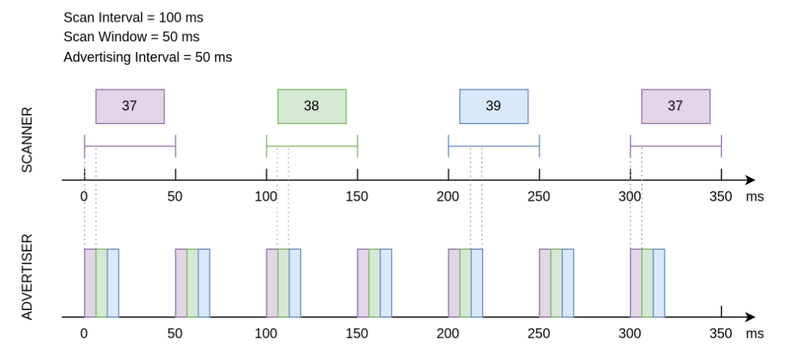
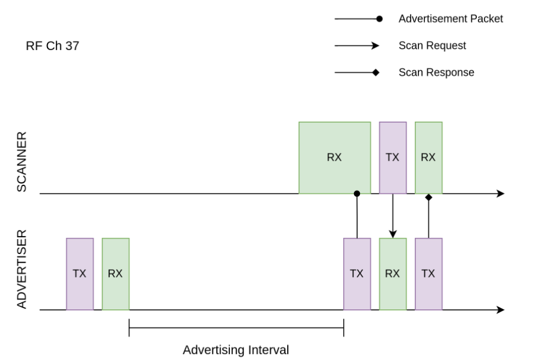
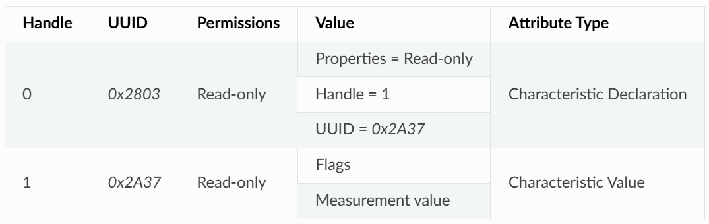
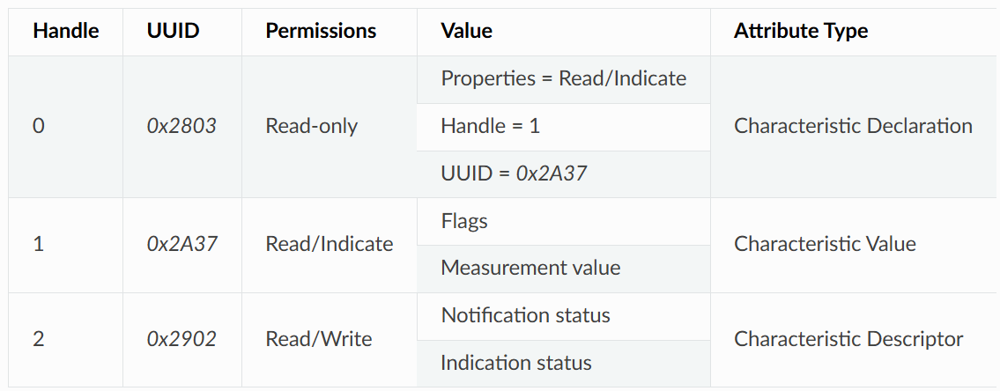
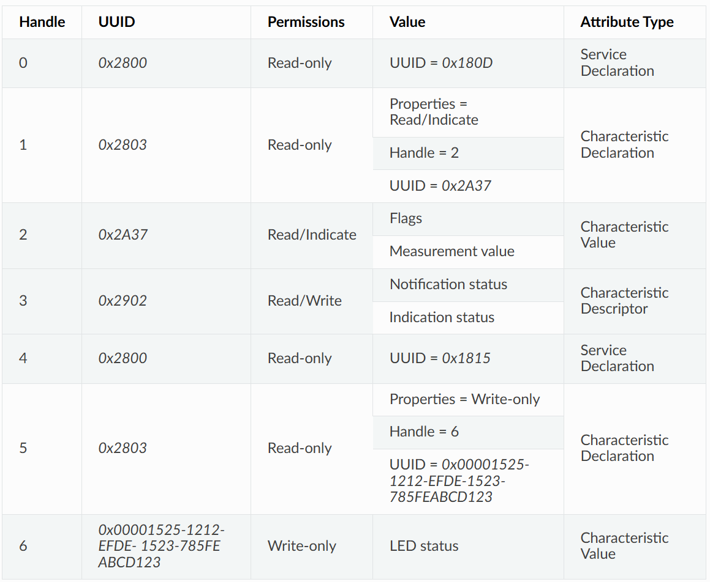

0. 背景
音频传输是经典蓝牙 (Bluetooth Classic) 的典型应用场景，而低功耗蓝牙是一种与经典蓝牙不兼容的蓝牙通信协议，在蓝牙 4.0 中被引入。顾名思义，低功耗蓝牙是一种功耗非常低的蓝牙协议，通信速率也比经典蓝牙更低一些，其典型应用场景是物联网 (Internet of Things, IoT) 中的数据通信，例如智能开关或智能传感器。针对低功耗蓝牙 (Bluetooth LE) 的基本概念进行学习梳理。
1. 低功耗蓝牙的分层架构
低功耗蓝牙协议定义了三层软件结构，自上而下分别是：
- 应用层 (Application Layer)；
- 主机层 (Host Layer)；
- 控制器层 (Controller Layer)；

* 低功耗蓝牙分层架构示意
应用层 即以低功耗蓝牙为底层通信技术所构建的应用，依赖于主机层向上提供的 API 接口。
主机层 负责实现 L2CAP、GATT/ATT、SMP、GAP 等底层蓝牙协议，向上对应用层提供 API 接口，向下通过主机控制器接口 (Host Controller Interface, HCI) 与控制器层通信。
控制器层 包括物理层 (Physical Layer, PHY) 和链路层 (Link Layer, LL) 两层，向下直接与控制器硬件进行交互，向上通过 HCI 与主机层进行通信。
值得一提的是，蓝牙核心规范 (Core Specification) 允许主机层和控制器层在物理上分离，此时 HCI 体现为物理接口，包括 SDIO、USB 以及 UART 等；当然，主机层和控制器层可以共存于同一芯片，以实现更高的集成度，此时 HCI 体现为逻辑接口，常被称为虚拟主机控制器接口 (Virtual Host Controller Interface, VHCI)。一般认为，主机层和控制器层组成了低功耗蓝牙协议栈 (Bluetooth LE Stack)。
作为应用开发者，在开发过程中我们主要与主机层提供的 API 接口打交道，这要求我们对主机层中的蓝牙协议有一定的了解。接下来，我们会从连接和数据交换两个角度，对 GAP 和 GATT/ATT 层的基本概念进行介绍。
1.1. GAP 层 - 定义设备的连接
GAP 层的全称为通用访问规范 (Generic Access Profile, GAP)，定义了低功耗蓝牙设备之间的连接行为以及设备在连接中所扮演的角色。
GAP 状态与角色
GAP 中共定义了三种设备的连接状态以及五种不同的设备角色：
- 空闲 (Idle)
- 此时设备无角色，处于就绪状态 (Standby)
- 设备发现 (Device Discovery)
- 广播者 (Advertiser)
- 扫描者 (Scanner)
- 连接发起者 (Initiator)
- 连接 (Connection)
- 外围设备 (Peripheral)
- 中央设备 (Central)
广播者向外广播的数据中包含设备地址等信息，用于向外界设备表明广播者的存在，并告知其他设备是否可以连接。扫描者则持续接收环境中的广播数据包。若某一个扫描者发现了一个可连接的广播者，并希望与之建立连接，可以将角色切换为连接发起者。当连接发起者再次收到该广播者的广播数据，会立即发起连接请求 (Connection Request)；在广播者未开启白名单 (Filter Accept List, 又称 White List) 或连接发起者在广播者的白名单之中时，连接将被成功建立。
进入连接以后，原广播者转变为外围设备（旧称从设备 Slave），原扫描者或连接初始化者转变为中央设备（旧称主设备 Master）。
1.2. GATT/ATT 层 - 数据表示与交换
GATT/ATT 层定义了进入连接状态后，设备之间的数据交换方式，包括数据的表示与交换过程。
ATT 层
ATT 的全称是属性协议 (Attribute Protocol, ATT)，定义了一种称为属性 (Attribute) 的基本数据结构，以及基于服务器/客户端架构的数据访问方式。
简单来说，数据以属性的形式存储在服务器上，等待客户端的访问。以智能开关为例，开关量作为数据，以属性的形式存储在智能开关内的蓝牙芯片（服务器）中，此时用户可以通过手机（客户端）访问智能开关蓝牙芯片（服务器）上存放的开关量属性，获取当前的开关状态（读访问），或控制开关的闭合与断开（写访问）。
属性这一数据结构一般由以下构成：
- 句柄 (Handle)
- 类型 (Type)
- 访问权限 (Permissions)
- 值 (Value)
在协议栈实现中，属性一般被放在称为属性表 (Attribute Table) 的结构体数组中管理。一个属性在这张表中的索引，就是属性的句柄，常为一无符号整型。
属性的类型由 UUID 表示，可以分为 16 位、32 位与 128 位 UUID 三类。 16 位 UUID 由蓝牙技术联盟 (Bluetooth Special Interest Group, Bluetooth SIG) 统一定义，可以在其公开发布的 Assigned Numbers 文件中查询；其他两种长度的 UUID 用于表示厂商自定义的属性类型，其中 128 位 UUID 较为常用。
GATT 层
GATT 的全称是通用属性规范 (Generic Attribute Profile)，在 ATT 的基础上，定义了以下三个概念：
- 特征数据 (Characteristic)
- 服务 (Service)
- 规范 (Profile)
这三个概念之间的层次关系如下图所示

* GATT 架构
特征数据和服务都是以属性为基本数据结构的复合数据结构。 一个特征数据往往由两个以上的属性描述，包括
- 特征数据声明属性 (Characteristic Declaration Attribute)
- 特征数据值属性 (Characteristic Value Attribute)
除此以外，特征数据中还可能包含若干可选的描述符属性 (Characteristic Descriptor Attribute)。
一个服务本身也由一个属性进行描述，称为服务声明属性 (Service Declaration Attribute)。一个服务中可以存在一个或多个特征数据，它们之间体现为从属关系。另外，一个服务可以通过 Include 机制引用另一个服务，复用其特性定义，避免如设备名称、制造商信息等相同特性的重复定义。
规范是一个预定义的服务集合，实现了某规范中所定义的所有服务的设备即满足该规范。例如 Heart Rate Profile 规范由 Heart Rate Service 和 Device Information Service 两个服务组成，那么可以称实现了 Heart Rate Service 和 Device Information Service 服务的设备符合 Heart Rate Profile 规范。
广义上，我们可以称所有存储并管理特征数据的设备为 GATT 服务器，称所有访问 GATT 服务器以访问特征数据的设备为 GATT 客户端。
2. 设备发现
2.1. 蓝牙信道
广播是设备通过蓝牙天线，向外发送广播数据包的过程。由于广播者在广播时并不知道环境中是否存在接收方，也不知道接收方会在什么时候启动天线，所以需要周期性地发送广播数据包，直到有设备响应。
与经典蓝牙相同，蓝牙技术联盟为了解决数据冲突的问题，在低功耗蓝牙上也应用了自适应跳频技术 (Adaptive Frequency Hopping, AFH) ，该技术可以判断 RF 信道的拥挤程度，通过跳频避开拥挤的 RF 信道，以提高通信质量。不过低功耗蓝牙与经典蓝牙的不同之处在于，所使用的 2.4 GHz ISM 频段被划分为 40 个 2 MHz 带宽的射频 (Radio Frequency, RF) 信道，中心频率范围为 2402 MHz - 2480 MHz ，而经典蓝牙则是将这一频段划分为 79 个 1MHz 带宽的 RF 信道。
在蓝牙核心规范 4.2 (Bluetooth Core Specification 4.2) 中， RF 信道分为两种类型，如下
| 类型 | 数量 | 编号 | 作用 |
|---|---|---|---|
| 广播信道 (Advertising Channel) | 3 | 37-39 | 用于发送广播数据包和扫描响应数据包 |
| 数据信道 (Data Channel) | 37 | 0-36 | 用于发送数据通道数据包 |
广播者在广播时，会在 37-39 这三个广播信道中进行广播数据包的发送。在三个广播信道的广播数据包均发送完毕后，可以认为一次广播结束，广播者会在下一次广播时刻到来时重复上述过程。
扩展广播特性
蓝牙核心规范 4.2 中，广播数据包允许搭载最多 31 字节广播数据，这无疑限制了广播的功能。为了提高广播的可用性，蓝牙 5.0 标准引入了 扩展广播 (Extended Advertising) 特性，这一特性将广播数据包分为：
类型 简称 单包最大广播数据字节数 最大广播数据字节数 主广播数据包 (Primary Advertising Packet) Legacy ADV 传统 ADV 31 31 扩展广播数据包 (Extended Advertising Packet) Extended ADV 扩展 ADV 254 1650 扩展广播数据包由 ADV_EXT_IND 和 AUX_ADV_IND 组成，分别在主广播信道 (Primary Advertising Channel) 和次广播信道 (Secondary Advertising Channel) 上传输。其中，主广播信道对应于信道 37-39 ，次广播信道对应于信道 0-36 。由于接收方总是在主广播信道中接收广播数据，因此发送方在发送扩展广播数据包时，应在主广播信道中发送 ADV_EXT_IND ，在次广播信道中发送 AUX_ADV_IND ，并在 ADV_EXT_IND 中指示 AUX_ADV_IND 所在的次广播信道；通过这种机制，接收方能够在接收到主广播信道的 ADV_EXT_IND 以后，根据指示到指定的次广播信道去接收 AUX_ADV_IND ，从而得到完整的扩展广播数据包。
2.2. 广播周期
广播间隔可取的范围为 20 ms 到 10.24 s ，取值步长为 0.625 ms。
广播间隔的取值决定了广播者的可发现性 （Discoverability） 以及设备功耗。当广播间隔取得太长时，广播数据包被接收方接收到的概率就会变得很低，此时广播者的可发现性就会变差。同时，广播间隔也不宜取得太短，因此频繁发送广播数据需要消耗更多的电量。所以，广播者需要在可发现性和能耗之间进行取舍，根据应用场景的需求选择最合适的广播间隔。
值得一提的是，如果在同一空间中存在两个广播间隔相同的广播者，那么有概率出现重复性的撞包 （Packet Collision） 现象，即两个广播者总是在同一时刻向同一信道发送广播数据。由于广播是一个只发不收的过程，广播者无法得知是否发生了广播撞包。为了降低上述问题的发生概率，广播者应在每一次广播事件后添加 0-10 ms 的随机时延。
2.3. 广播数据包

* 广播数据包结构
| 名称 | 字节数 | 功能 |
|---|---|---|
| 预置码 (Preamble) | 1 | 特殊的比特序列，用于设备时钟同步 |
| 访问地址 (Access Address) | 4 | 标记广播数据包的地址 |
| 协议数据单元 (Protocol Data Unit, PDU) | 2-39 | 有效数据的存放区域 |
| 循环冗余校验和 (CRC) | 3 | 用于循环冗余校验 |
其中 PDU 包含头和有效负载。
PDU 头
| 名称 | bit | 备注 |
|---|---|---|
| PDU 类型 | 4 | |
| 保留位 | 1 | |
| 通道选择位 | 1 | 标记广播者是否支持 LE Channel Selection Algorithm #2 通道选择算法 |
| 发送地址类型 | 1 | 0/1 分别表示公共地址/随机地址 |
| 接收地址类型 | 1 | 0/1 分别表示公共地址/随机地址 |
| 有效负载长度 | 8 |
不同的 PDU 类型
| 可连接？ | 可扫描？ | 不定向？ | PDU 类型 | 作用 |
|---|---|---|---|---|
| 是 | 是 | 是 | ADV_IND | 最常见的广播类型 |
| 是 | 否 | 否 | ADV_DIRECT_IND | 常用于已知设备重连 |
| 否 | 否 | 是 | ADV_NONCONN_IND | 作为信标设备，仅向外发送广播数据 |
| 否 | 是 | 是 | ADV_SCAN_IND | 作为信标设备，一般用于广播数据包长度不足的情况，此时可以通过扫描响应向外发送额外的数据 |
PDU 有效负载
| 名称 | 字节数 | 备注 |
|---|---|---|
| 广播地址 | 6 | 广播设备的 48 位蓝牙地址，可以分为公共地址和随机地址 |
| 广播数据 | 0-31 | 由若干广播数据结构组成 |
其中广播数据的数据结构为
| 名称 | 字节数 | 备注 |
|---|---|---|
| 数据长度 (AD Length) | 1 | |
| 数据类型 (AD Type) | n | 大部分数据类型占用 1 字节 |
| 数据 (AD Data) | (AD Length - n) |
2.4. 扫描
扫描窗口与扫描间隔
- 扫描窗口：扫描者在同一个 RF 信道持续接收蓝牙数据包的持续时间，例如扫描窗口参数设定为 50 ms 时，扫描者在每个 RF 信道都会不间断地扫描 50 ms。
- 扫描间隔：相邻两个扫描窗口开始时刻之间的时间间隔，所以扫描间隔必然大于等于扫描窗口。

* 广播与扫描时序示意图
扫描请求与扫描响应
从目前的介绍来看，似乎广播过程中广播者只发不收，扫描过程中扫描者只收不发。事实上，扫描行为分为以下两种
- 被动扫描 (Passive Scanning)：扫描者只接收广播数据包
- 主动扫描 (Active Scanning)：扫描者在接收广播数据包以后，还向可扫描广播者发送扫描请求 (Scan Request)
可扫描广播者在接收到扫描请求之后，会广播扫描响应 (Scan Response) 数据包，以向感兴趣的扫描者发送更多的广播信息。扫描响应数据包的结构与广播数据包完全一致，区别在于 PDU 头中的 PDU 类型不同。
在广播者处于可扫描广播模式、扫描者处于主动扫描模式的场景下，广播者和扫描者的数据发送时序变得更加复杂。对于扫描者来说，在扫描窗口结束后会短暂进入 TX 模式，向外发送扫描请求，随后马上进入 RX 模式以接收可能的扫描响应；对于广播者来说，每一次广播结束后都会短暂进入 RX 模式以接收可能的扫描请求，并在接收到扫描请求后进入 TX 模式，发送扫描响应。

* 扫描请求的接收与扫描响应的发送
3. 连接
当扫描者在某一个广播信道接收到一个广播数据包时，若该广播者是可连接的，那么扫描者可以在同一广播信道发送连接请求 (Connection Request)。对于广播者来说，它可以设置 接受列表 (Filter Accept List) 以过滤不受信任的设备，或接受任一扫描者的连接请求。随后，广播者转变为外围设备，扫描者转变为中央设备，两者之间可以在数据信道进行双向通信。
如 扫描请求与扫描响应 所述，广播者在每一个信道的广播结束以后，都会短暂进入 RX 模式，以接收可能的扫描请求。实际上，这个 RX 过程中还可以接受连接请求。所以对于扫描者来说，发送连接请求的时间窗口和发送扫描请求的时间窗口是类似的。
* 连接发起
3.1. 连接间隔与连接事件
在连接中，中央设备与外围设备会周期性地进行数据交换，这个数据交换的周期被称为连接间隔 (Connection Interval)。连接间隔作为连接参数之一，在连接请求中被首次确定，后续也可以进行修改。连接间隔的取值步长 (Step Size) 为 1.25 ms ，取值范围为 7.5 ms (6 steps) - 4.0 s (3200 steps) 。
一次数据交换的过程被称为连接事件 (Connection Event)。一次连接事件中，存在一次或多次数据包交换（数据量比较大时需要分包发送）；一次数据包交换的过程是，中央设备先给外围设备发送一个数据包，随后外围设备给中央设备发送一个数据包。即便连接中任意一方在连接间隔开始时无需发送数据，也必须发送空数据包以维持连接。
* 连接间隔与连接事件
值得一提的是，若一次连接事件中需要发送的数据很多，导致连接事件时长超过了连接间隔，那么必须将一次连接事件拆分成多次连接事件；这意味着，假如连接间隔的剩余时间不足以完成下一次数据包交换，那么下一次数据包交换必须等到下一次连接间隔开始时才能进行。
当需求的数据交换频率比较低时，可以设定较长的连接间隔；在连接间隔中，设备可以在除连接事件以外的时间休眠，以降低能耗。
3.2. 连接参数
超时参数
连接超时参数 (Supervision Timeout) 规定了两次成功连接事件之间的最长时间。若在一次成功的连接事件之后，经过了连接超时时间却仍没有完成另一次成功的连接事件，则可以认为连接已断开。这个参数对于连接状态的维护是非常重要的，例如连接中的其中一方突然意外断电，或离开了通信范围，那么连接中的另一方可以通过判断连接是否超时，决定是否需要断开连接以节省通信资源。
外围设备延迟（低功耗优化参数）
外围设备延迟 (Peripheral Latency) 规定了外围设备在无需发送数据的前提下，最多可忽略的连接事件数量。
为了理解这个连接参数的作用，让我们以蓝牙鼠标为例。用户在使用键盘的过程中，鼠标并没有需要发送的有效数据，此时最好降低数据包发送的频率以节省电量；在使用鼠标的过程中，我们希望鼠标能够尽可能快地发送数据，以降低使用延迟。也就是说，蓝牙鼠标的数据发送是间歇性高频率的。此时，如果仅靠连接间隔参数进行连接调节，则那么较低的连接间隔会导致高能耗，较高的连接间隔会导致高延迟。
在这种场景下，外围设备延迟机制将是一个完美的解决方案。为了降低蓝牙鼠标的延迟，我们可以将连接间隔设为一个较小的值，例如 10 ms ，那么在密集使用时数据交换频率可达 100 Hz ；随后，我们将外围设备延迟设定为 100 ，那么蓝牙鼠标在不使用的状态下，实际的数据交换频率可降低至 1 Hz 。通过这种设计，我们在不调整连接参数的前提下，实现了可变的数据交换频率，在最大程度上提升了用户体验。
Supervision Timeout > (1 + Slave Latency) × Connection Interval × 2
最大传输单元
最大传输单元 (Maximum Transmission Unit, MTU) 指的是单个 ATT 数据包的最大字节数。在介绍 MTU 参数之前，有必要先对数据通道数据包 (Data Channel Packet) 的结构进行说明。
数据通道数据包和 广播数据包 的最外层结构一致，区别在于 PDU 的结构。数据 PDU 可以分为三部分，如下
| 名称 | 字节数 | 备注 |
|---|---|---|
| 头 | 2 | |
| 有效负载 | 0-27 / 0-251 | 在蓝牙核心规范 4.2 以前，有效负载最大值为 27 字节； 蓝牙核心规范 4.2 引入了数据长度扩展 (Data Length Extension, DLE) 特性，有效负载的最大值可达 251 字节 |
| 消息完整性检查 | 4 | 可选 |
数据 PDU 的有效负载可以分为两部分
| 名称 | 字节数 |
|---|---|
| L2CAP 头 | 4 |
| ATT 数据 | 0-23 / 0-247 |
MTU 的默认值为 23 字节，恰为蓝牙核心规范 4.2 之前单个数据 PDU 的最大可承载 ATT 数据字节数。
MTU 可以设定为更大的值，例如 140 字节。在蓝牙核心规范 4.2 以前，由于有效负载中最多只有 23 字节可以承载 ATT 数据，所以必须将完整的一包 ATT 数据包拆分成若干份，分散到多个数据 PDU 中。在蓝牙核心规范 4.2 以后，单个数据 PDU 最多可以承载 247 字节 ATT 数据，所以 MTU 为 140 字节时仍然可以使用单个数据 PDU 承载。
4. 数据交换
4.1. GATT 数据特征与服务
GATT 服务是低功耗蓝牙连接中两个设备进行数据交换的基础设施，其最小数据单元是属性。在数据表示与交换中，我们对 ATT 层的属性以及 GATT 层的特征数据、服务与规范进行了简要介绍。下面我们对基于属性的数据结构细节进行说明。
属性 (ATT)
- 句柄 (Handle)：16 位无符号整型，表示属性在 属性表 中的索引
- 类型 (Type)：ATT 属性使用 UUID (Universally Unique ID) 对类型进行区分
- 访问权限：是否需要加密/授权？可读或可写？
- 值：实际用户数据或另一属性的元数据
低功耗蓝牙中存在两种类型的 UUID ，如下
- SIG 定义的 16 位 UUID
- 厂商自定义的 128 位 UUID
在 SIG 官方提供的 Assigned Numbers 标准文件中，给出了一些常用特征数据和服务的 UUID ，例如
| 分类 | 类型名称 | UUID |
|---|---|---|
| 服务 | 血压服务 | 0x1810 |
| 服务 | 通用音频服务 | 0x1853 |
| 特征数据 | 年龄 | 0x2A80 |
| 特征数据 | 外观 | 0x2A01 |
事实上，这些服务和特征数据的定义也由 SIG 一并给出。例如心率测量值 (Heart Rate Measurement) 的值中必须含有标志位、心率测量值场，可以含有能量拓展场、 RR-间隔场以及传输间隔场等。所以，使用 SIG 定义的 UUID 使得不同厂商的低功耗蓝牙设备之间可以识别对方的服务或特征数据，实现跨厂商的低功耗蓝牙设备通信。
厂商自定义的 128 位 UUID 则用于满足厂商开发私有服务或数据特征的需求。
特征数据
- 特征数据声明：含有特征数据值的读写属性 (Properties)、句柄以及 UUID 信息 UUID 为 0x2803，只读属性
- 特征数据值：实际的用户数据
- 征数据描述符：特征数据的其他描述信息
特征数据声明和特征数据值之间的关系
下面以心率测量值 (Heart Rate Measurement) 为例，说明特征数据声明和特征数据值之间的关系。
下表为一属性表，含心率测量值数据特征的两个属性。首先来看句柄为 0 的属性，其 UUID 为 0x2803，访问权限为只读，说明这是一个特征数据声明属性。属性值中，读写属性为只读，句柄指向 1 ，说明句柄为 1 的属性为该特征数据的值属性； UUID 为 0x2A37，说明这个特征数据类型为心率测量值。
接下来看句柄为 1 的属性，其 UUID 为 0x2A37，访问权限为只读，与特征数据声明属性的值一一对应。该属性的值由标志位和测量值两部分组成，符合 SIG 规范对心率测量值特征数据的定义。

特征数据描述符
特征数据描述符起到对特征数据进行补充说明的作用。最常见的特征数据描述符是客户端特征数据配置描述符 (Client Characteristic Configuration Descriptor, CCCD)，下由 CCCD 代指。当特征数据支持由服务器端发起的 数据操作 （通知或指示）时，必须使用 CCCD 描述相关信息；这是一个可读写属性，用于 GATT 客户端告知服务器是否需要启用通知或指示，写值操作也被称为订阅 (Subscribe) 或取消订阅。
CCCD 的 UUID 是 0x2902，属性值中仅含 2 比特信息。第一个比特用于表示通知是否启用，第二个比特用于表示指示是否启用。我们将 CCCD 也添加到属性表中，并为心率测量值特征数据添加指示 (Indicate) 访问权限，就可以得到完整的心率测量值特征数据在属性表中的形态，如下

服务
- 服务声明属性 (Service Declaration Attribute)
- 特征数据定义属性 (Characteristic Definition Attributes)
在 特征数据 中提到的三种特征数据属性都属于特征数据定义属性。也就是说，服务的数据结构在本质上就是一些特征数据属性加上一个服务声明属性。
服务声明属性的 UUID 为 0x2800，访问权限为只读，值为标识服务类型的 UUID ，例如 Heart Rate Service 的 UUID 为 0x180D，那么其服务声明属性就可以表示为
| Handle | UUID | Permissions | Value | Attribute Type |
|---|---|---|---|---|
| 0 | 0x2800 | Read-only | 0x180D | Service Declaration |
属性表示例
下面以 NimBLE_GATT_Server 为例，展示一个 GATT 服务器可能的属性表形态。例程中含有两个服务，分别是 Heart Rate Service 和 Automation IO Service ；前者含有一个 Heart Rate Measurement 特征数据，后者含有一个 LED 特征数据。整个 GATT 服务器有属性表如下

GATT 客户端在与 GATT 服务器初次建立通信时，会从 GATT 服务器拉取属性表中的元信息，从而获取 GATT 服务器上可用的服务以及数据特征。这一过程被称为 服务发现 (Service Discovery)。
4.2. GATT 数据操作
数据操作指的是对 GATT 服务器上的特征数据进行访问的操作，主要可以分为以下两类：
- 由客户端发起的操作
- 读 (Read)：从 GATT 服务器上拉取某一特征数据的当前值。
- 写 (Write)：普通的写操作要求 GATT 服务器在收到客户端的写请求以及对应数据以后，进行确认响应。
- 写（无需响应） (Write without response)：快速写操作则不需要服务器进行确认响应。
- 由服务器发起的操作
- 通知 (Notify)：通知是 GATT 服务器主动向客户端推送数据的操作，不需要客户端回复确认响应。
- 指示 (Indicate)：与通知相似，区别在于指示需要客户端回复确认，因此数据推送速度比通知慢。
虽然通知和指示都是由服务器发起的操作，但是服务器发起操作的前提是，客户端启用了通知或指示。所以，本质上 GATT 的数据交换过程总是以客户端请求数据开始。
参考
[1]. The Bluetooth® Low Energy Primer
[2]. esp32-s3 Bluetooth® Low Energy
[3].The Bluetooth® LE Security Study Guide